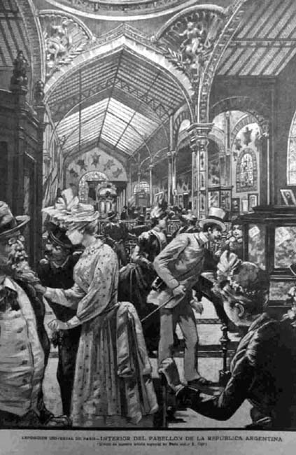

|
|  |
|
Exposición Universal de París: Interior del Pabellón de la República Argentina, 1889
|
Abroad, the Latin American elites would take advantage, from very early on, of the great world´s fairs, to stage monumental displays of the nation-state as a repository of resources still to be exploited by overseas capital, and as a unit of production that would soon be able to rival its overseas peers. At the Universal Exhibition of 1889, the commissions of Argentina and Brazil undertook arduous negotiations with the organising committee in order to have their pavilions located close to the Eiffel Tower and the Champ de Mars, and in convenient distance from the exhibitions of Europe´s colonies, as the exhibition was understood as a symbolic geography in which one had to stake one´s claim to progress and civilisation. The Argentine pavilion, designed by the French architect Charles Ballu, carefully avoided any allusions to Spanish colonial style or pre-Colombian traditions, opting instead for the French eclectic style also common to many buildings on Buenos Aires´ new central boulevard, the Avenida de Mayo, inaugurated only recently. Allegorical sculptures –all by French artists– represented the principal natural resources of the country: meat, leather, cereals. The overall impression was that of a country richly gifted by nature, yet also elegant and cosmopolitan (that is, 'European') in character (neither gauchos nor Indians were made reference to).
|